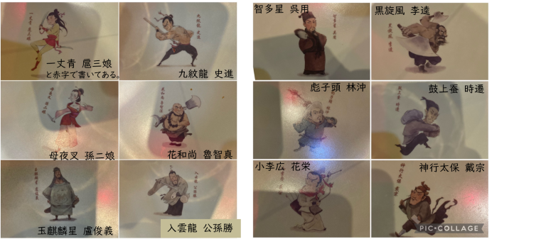

日常に潜む水滸伝
日常で見つけた『水滸伝』についてご紹介します。
10月20日に池袋の中華屋に行ったときの写真です。
中国に留学していたこともあって時々本場のような中華を食べたくなることがある為、私はよく池袋の北口に赴くことがあります。
お店に入ると写真のような取り皿があったのですが、そこに描いてあるイラストは『水滸伝』の登場人物を描いたものでした。
友人が先に気づいたのですが、私も大変舞い上がってしまい、写真に収めました。
日本ではあまり有名でない『水滸伝』ですが、その物語を知ると、思いがけず日常に潜んでいることがわかります。

トップに戻る